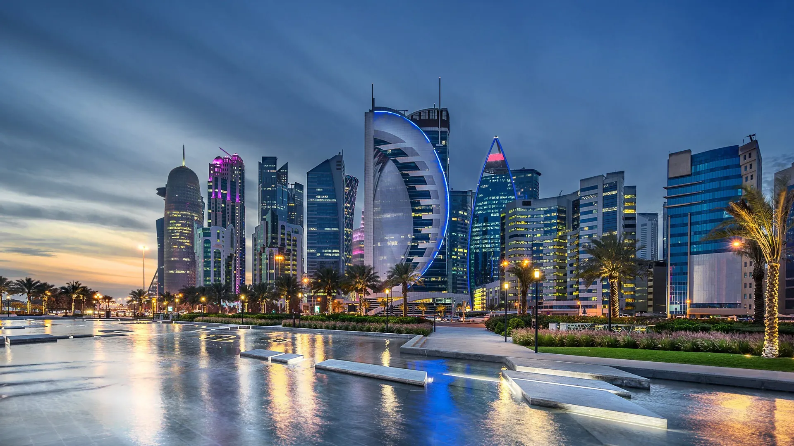
Destination Guide
Doha
A city that went from pearl-diving port to glass skyline in a generation — and kept its old souq running the whole time.
Best Time to Go
Nov–Mar
Fly Into
Hamad Intl. (DOH)
Currency
Qatari Riyal (QAR)
Suggested Stay
4–6 days
Plan This Trip
Search flights and hotels for Doha right here — no extra tabs.
Or search with Kiwi.com
Why go
Doha packs a genuine culture stop, a proper old souq, and a set of architectural landmarks that most cities twice its age can't match — all within a 20-minute taxi ride of each other. It also works brilliantly as a stopover: two or three days is enough to see the highlights between long-haul flights, and Hamad International's central location means most of Asia, Africa and Europe are a single flight away. Add a desert safari and you've got a complete short break, no extension required.

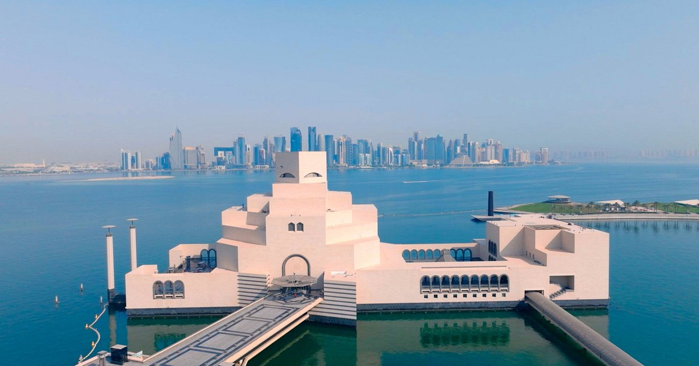
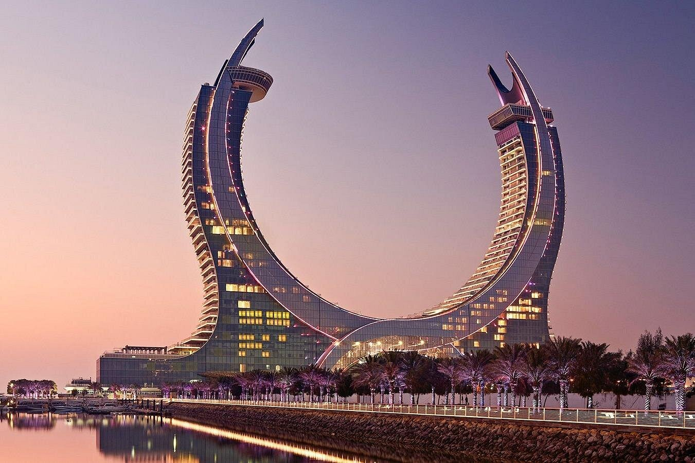
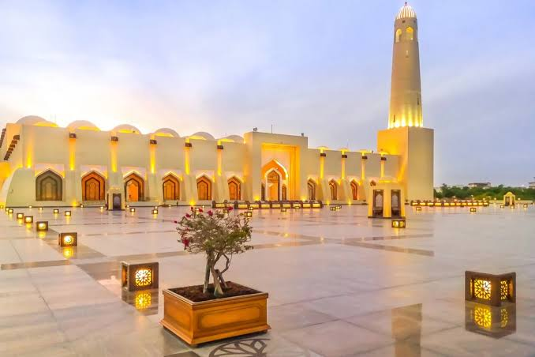
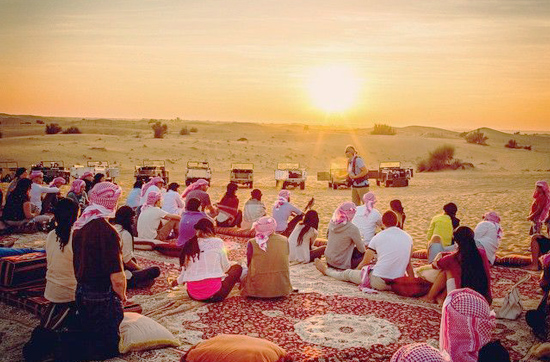
Where to Stay — West Bay & The Pearl
Most visitors base themselves along the Corniche in West Bay for skyline views and easy access to the museums, or out at The Pearl-Qatar for a quieter, marina-side stay with more restaurants within walking distance.
Katara Towers, Lusail
The twin scimitar-shaped towers on Lusail Marina — a dramatic, ultra-modern base a short drive north of central Doha.
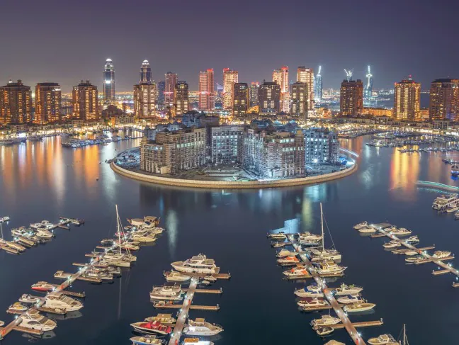
The Pearl-Qatar
A man-made island of marinas, waterfront dining and resort-style hotels — quieter than downtown, with its own beach clubs.
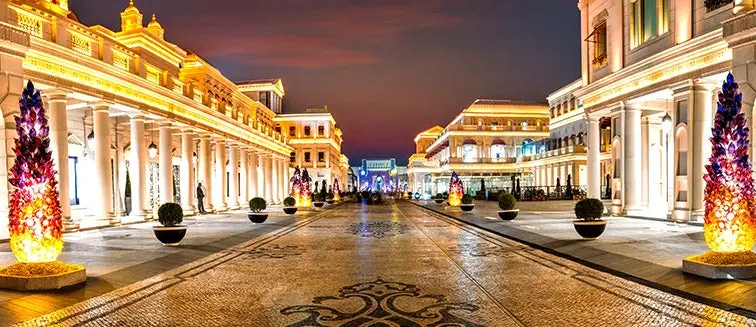
Katara Cultural Village
Between West Bay and The Pearl — art galleries, an amphitheatre, a public beach, and some of the best restaurant views in the city.
Where to Go
Doha's sights cluster tightly around the Corniche, so you can cover most of this list on foot or with short taxi hops.
Museum of Islamic Art
I.M. Pei's limestone building sitting on its own man-made island — one of the finest collections of Islamic art anywhere, and free to enter.
Souq Waqif
Restored wind-tower architecture, spice stalls, falcon souq, and easily the best concentration of restaurants in the city. Go after sunset.
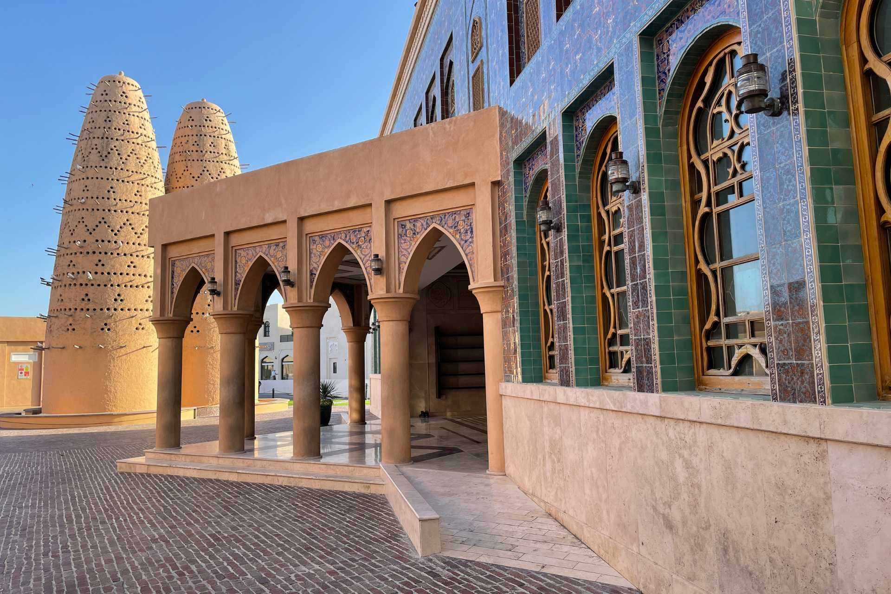
Katara Cultural Village
Beehive-shaped pigeon towers, a gold-tiled mosque, galleries and a public beach — Doha's arts district, walkable in an afternoon.
State Grand Mosque
Qatar's national mosque, with space for 30,000 worshippers. Modest dress required; visitors welcome outside prayer times.
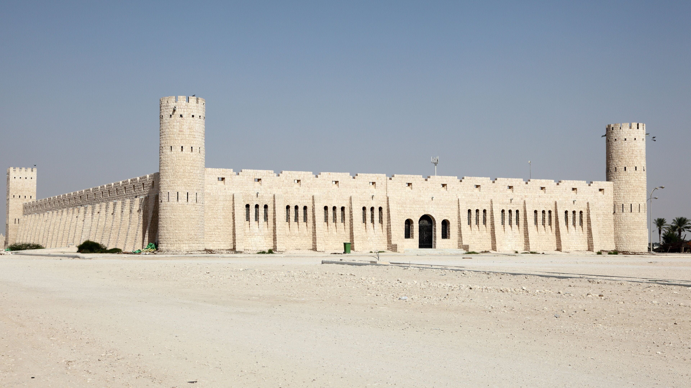
Sheikh Faisal Museum
A sprawling private collection — vintage cars, Bedouin artefacts, and one of the region's most eclectic small museums. About 20 minutes outside the city.
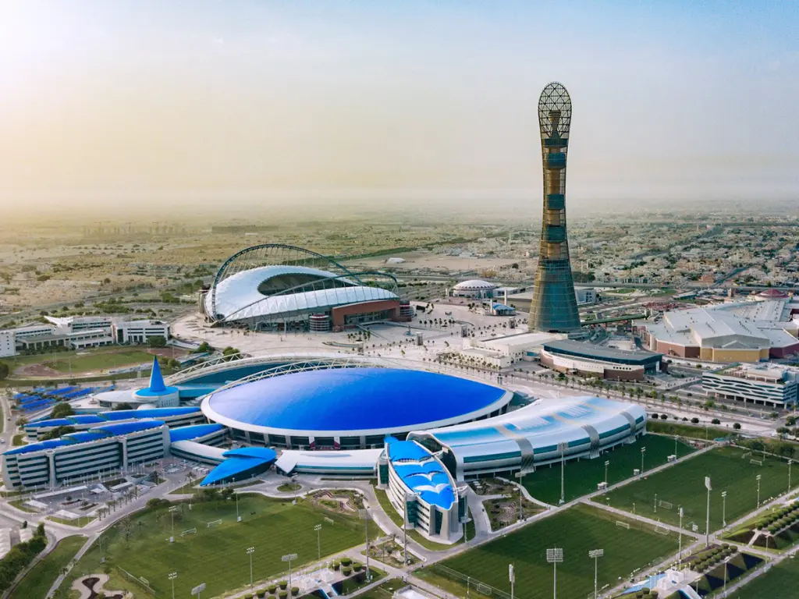
Aspire Zone & Torch Tower
Doha's sports city — stadiums, an indoor beach dome, and parkland underneath the landmark Torch Tower. Good for an active half-day.
For shopping with air conditioning, Villaggio Mall recreates a Venetian canal indoors, gondola rides included — a slightly surreal but genuinely fun stop with kids.
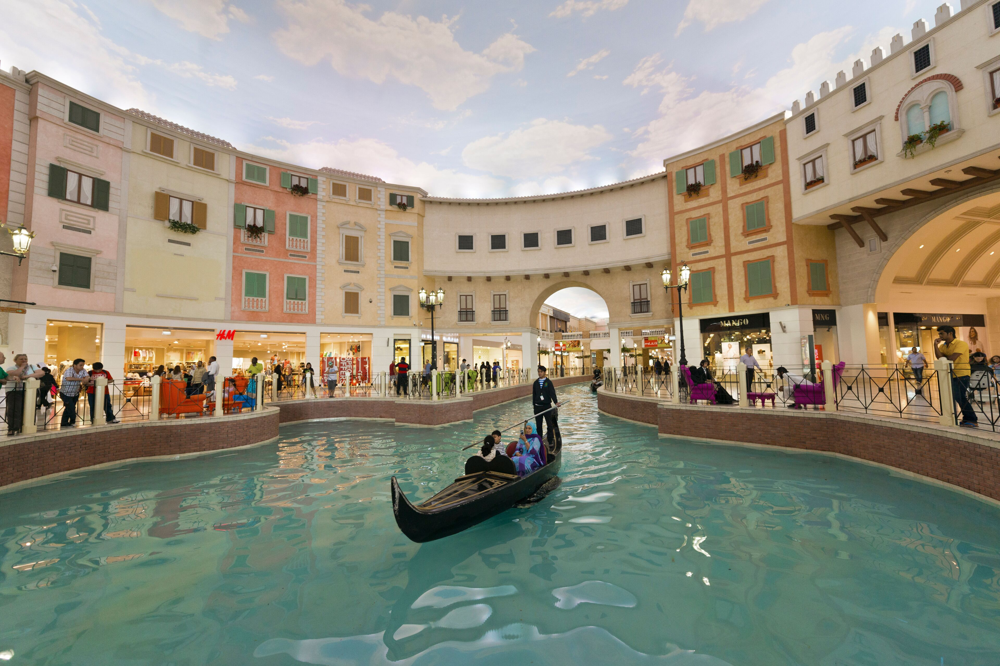
Out of the City: Desert Safari
An afternoon or overnight trip to the dunes south of the city is the single most popular day trip from Doha, and worth building into any stay of three days or more. Most tours combine dune bashing in a 4x4, a stop at the Inland Sea where the desert meets the water, and a sunset camp with dinner.
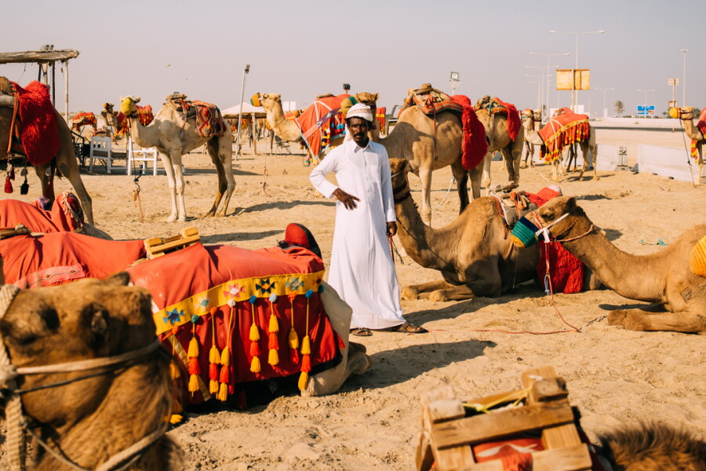
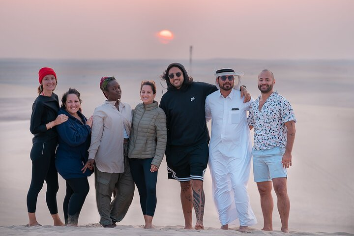
Getting There
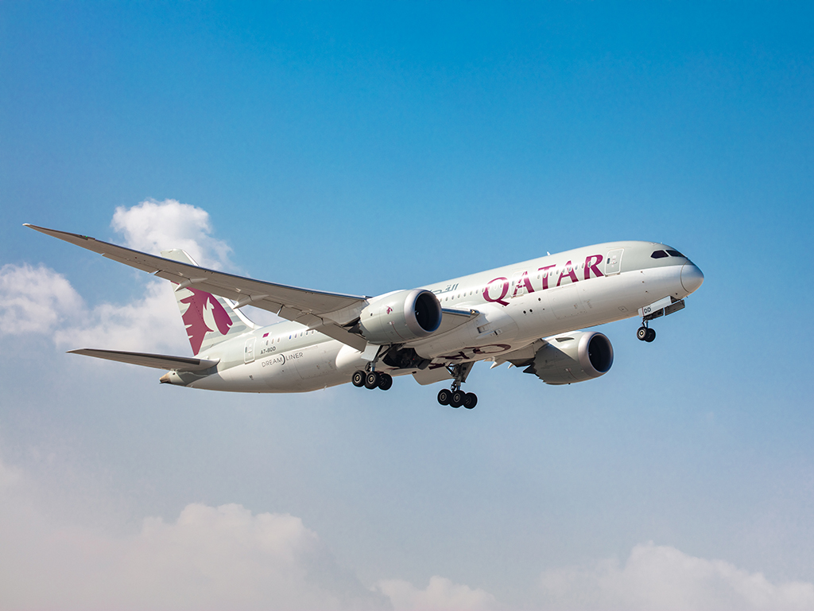
Qatar Airways
Qatar's multi-award-winning national carrier flies into Hamad International Airport (DOH) from a huge network spanning Europe, Africa, Asia and the Americas, and is consistently ranked among the world's best airlines for long-haul comfort.
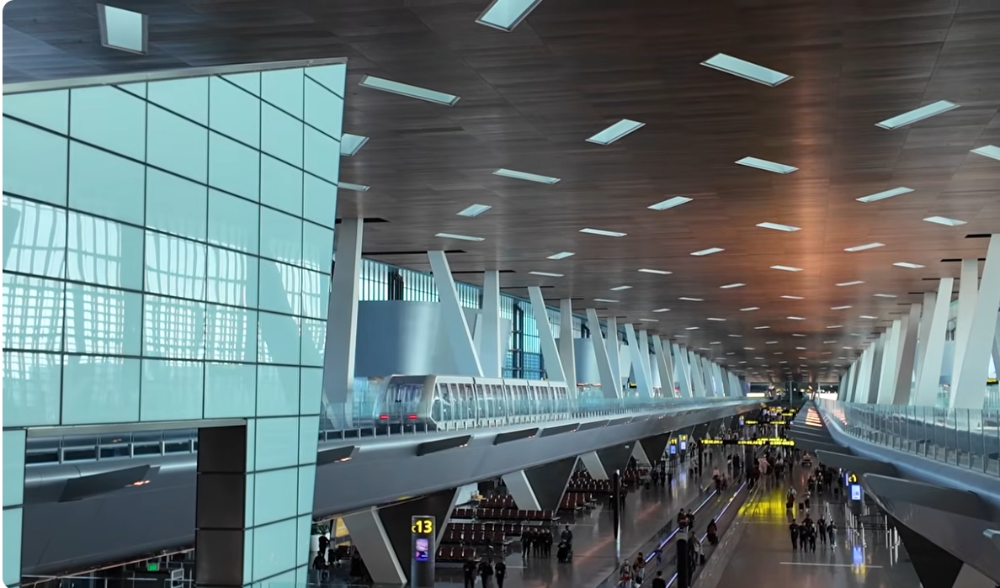
Hamad International Airport (DOH)
Regularly rated the world's best airport — indoor gardens, an orchid house, and a fast automated train between terminals. About 20 minutes by taxi or metro from West Bay.
A Simple 4-Day Route
Day 1
Corniche & Souq Waqif
Land, settle in, sunset walk along the Corniche, dinner in the souq.
Day 2
Museums & Katara
Museum of Islamic Art in the morning, Katara Cultural Village in the afternoon.
Day 3
Desert Safari
Full-day dune bashing, Inland Sea and a sunset desert camp.
Day 4
Lusail & The Pearl
Katara Towers, Villaggio Mall, and a final evening at The Pearl-Qatar marina.
Good to Know
Getting around
Doha Metro covers most major sights cheaply; taxis and ride-hailing apps fill the gaps. A rental car is only worth it for the desert day trip.
Entry requirements
Many nationalities receive a free visa on arrival. Check the official Hukoomi / MOI site for your passport before booking.
Dress & customs
Modest dress (shoulders and knees covered) is expected in public places, and required at mosques. Summers (Jun–Sep) are extremely hot — plan an indoor-heavy itinerary if visiting then.
Start Planning Your Doha Trip
Compare flights to Hamad International, and browse hotels across West Bay and The Pearl, in one place.